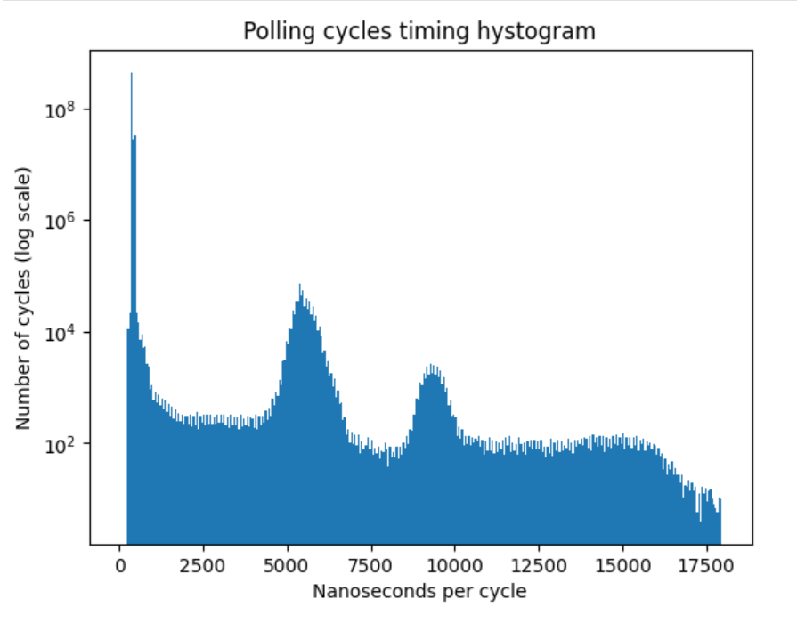
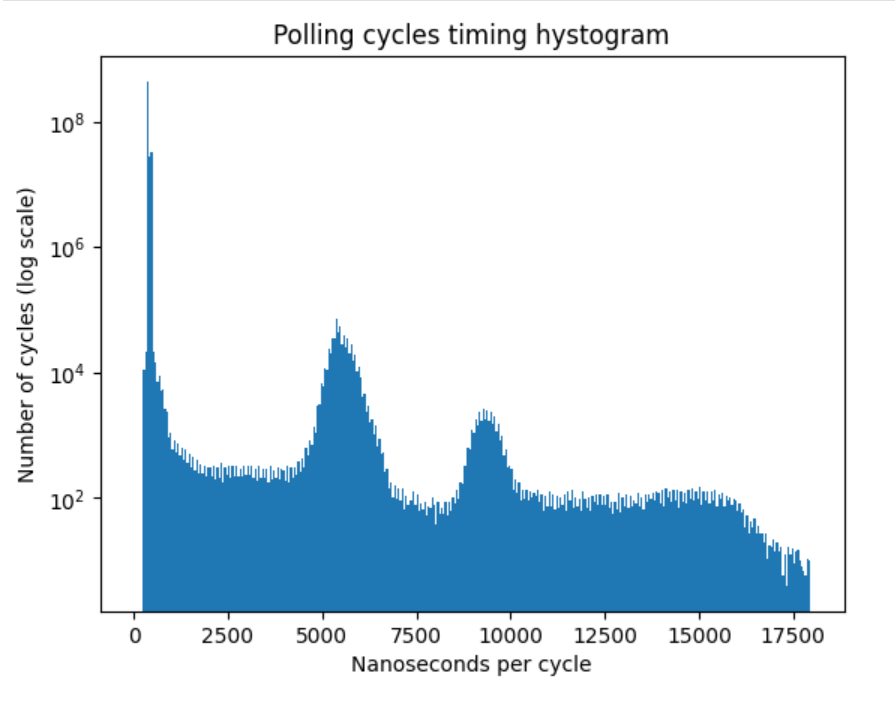

FPGA-Driven data streaming into Raspberry Pi through GPIO: Speed and timing stability. Part 1
Introduction
GPIO could be considered one of the options for transferring data at a relatively fast speed into single-board computers (SBCs), such as the Raspberry Pi. Possible applications include capturing radio signals for software-defined radio (SDR) or processing data from a microphone array: each microphone typically captures fewer than or equal to 48K samples per second, and having a few tens or even hundreds of microphones can result in a significant transfer rate that needs to be managed.
SBCs, like the Raspberry Pi 4, have substantial computing power and typically a few gigabytes of RAM, in addition to exposed GPIO pins. The latter makes it easy to connect them to external devices. Thus, using them as the core of a high-speed data acquisition and processing system seems attractive.
There are two main approaches for transferring data to/from an SBC via GPIO: polling (also known as bit-banging) and using DMA. Surprisingly, both can be done in user space on RPi (although elevated privileges are needed). As shown in https://github.com/hzeller/rpi-gpio-dma-demo, polling is faster, so we will use polling in our experiments.
One of the challenges with polling, though, is that SBCs typically run Linux or another general-purpose operating system, so the CPU is a shared resource, and the system will interrupt our bit-banging process from time to time, causing the data flow to stop. Consequently, the data stream has to be buffered on the device side.
We will consider a strategy to minimize interruption of the polling process and try see the transfer rate we can acheive this way. We will also estimate the interruption time and the required buffer size on the device side which will allow not to loose any data.
Setting aside 1 core
Turns out that the Linux kernel allows to "set aside" some CPU cores, so the operation system won't schedule any processes to run on that cores by default. However the system is still aware of this reserved cores and processes can be explicitly assigned to these cores. There are a few things here we must take into account: first of all, these isolated cores are still interrupted by system clock. We expect the interruption time to be no more than a few tenths of microseconds, but measuring it is one of the goals of this work.
The kernel command line parameter isolcpu allows to "isolate set of CPU from disturbences". Let's "isolate" 3rd core or
RPi4 CPU "form disturbance": here is my kernel command line params file cmdline.txt:
console=serial0,115200 console=tty1 ...[SKIPPED]... isolcpus=3
The only change I made was adding isolcpus=3 at the end of file.
Now, when you boot into the system you can use a tool like top/htop and confirm that 3rd core is allways idle.
It is possible to explicitly assign a process to that core:
taskset -c 3 yes > /dev/null &
Which starts a dummy process yes > /dev/null on 3rd CPU core. Our strategy is to run the polling process on
the isolated core so we will have minimal interruptions from the OS.
Measuring setup
To measure transfer rate and timing, we will build a simple timing device based on an FPGA, which has a fast internal counting timer. The device waits for the rising edge of the "Data Req" (data request) line and sets its 20-bit data output to the timer's value and the "Data Rdy" (data ready) line. The polling program detects the change in the "Data Rdy" line, reads and records the 20-bit data value from the parallel bus, and then sets "Data Req" to low on the SBC. This signals to the timing device that the SBC has successfully read the data, prompting it to set "Data Rdy" to low. The polling program detects the falling edge of the "Data Rdy" line and proceeds to the next cycle iteration. The difference in consecutive data reads from the timing device allows us to measure the time between loop iterations. We need to measure two values: the average number of cycles per unit of time (to determine throughput) and the maximum time between two iterations of the loop (to determine the required buffering size).
Here is the wiring diagram of the measuring setup:
The reason we use a 20-bit data bus is that we hit the maximum number pins available on Icestick. The number of GPIO pins on the Raspberry Pi is 28, and since the protocol uses 3 lines for control, we have 25 pins remaining on the SBC side.
The exchange process described above can be visualized as follows:
The polling program is written in C and uses direct access to GPIO registers in memory. In order to get access to the memory-mapped GPIO registers known by their physical addresses in memory, it uses mmap to map the /dev/mem file into the program's address space. See ... for details.
I used verilog to program the FPGA on the "timing device". Both the FPGA and the Raspberry Pi code are available at ....
Results
The program reads 500M values of the timer from the FPGA and records and dumps the raw 20 lower bits of the timer to a file. I post-processed the file to calculate the time between two consecutive reads, so we can see the distribution of the time intervals.
Some observations: initially the typical timer increment between reads is aroun 42 timer clicks, here is the first 1000 reads
42, 42, 41, 0, 84, 41, 42, 41, 42, 41, 0, 83, 42, 41, 42, 42, 41, 42, 42, 41, 42, 41, 41, 42, 42, 41, 42, 0, 83, 41, 43, 41, 0, 83, 41, 42, 41, 42, 41, 42, 42, 41, 42, 42, 41, 42, 42, 41, 41, 42, 42, 41, 42, 41, 42, 41, 42, 42, 41, 42, 41, 0, 84, 41, 42, 41, 42, 41, 42, 42, 0, 83, 42, 41, 41, 42, 42, 41, 42, 42, 41, 42, 42, 41, 42, 42, 42, 41, 41, 42, 41, 42, 41, 42, 42, 0, 83, 41, 42, 42, 41, 41, 42, 41, 42, 42, 41, 41, 42, 42, 43, 42, 0, 83, 41, 42, 41, 0, 84, 41, 42, 41, 42, 41, 42, 42, 42, 41, 42, 41, 42, 42, 42, 41, 42, 41, 41, 42, 42, 41, 42, 0, 83, 42, 42, 0, 83, 42, 41, 41, 42, 0, 83, 793, -710, 42, 41, 42, 42, 42, 41, 42, 41, 0, 83, 42, 41, 42, 41, 42, 42, 41, 42, 42, 41, 0, 83, 42, 41, 42, 0, 83, 41, 43, 41, 42, 41, 0, 83, 41, 42, 0, 83, 42, 41, 42, 42, 41, ...
Since the timer frequency is 50.25MHz, the typical time between reads is 42/50.25MHz = 0.836us, or approximatelly 1.2M reads per second.
After approximately 67K the typical time between reads decreases to 19 timer clicks, or 0.378us, or 2.6M reads per second.
19, 15, 15, 15, 15, 0, 31, 18, 16, 19, 15, 19, 19, 19, 19, 19, 19, 19, 19, 15, 15, 15, 15, 0, 31, 19, 19, 19, 19, 19, 0, 34, 16, 19, 0, 34, 19, 19, 19, 15, 15, 0, 31, 19, 19, 0, 34, 19, 19, 16, 15, 15, 15, 16, 0, 34, 19, 19, 19, 19, 19, 19, 15, 16, 19, 19, 19, 19, 15, 19, 15, 15, 15, 15, 16, 19, 19, 19, 0, 34, 19, 19, 19, 19, 19, 19, 0, 34, 16, 0, 34, 15, 15, 0, 31, 0, 34, 19, 19, 19, 19, 19, 19, 0, 34, 19, 0, 34, 19, 19, 19, 19, 19, 19, 19, 19, 19, 19, 0, 34, 19, 19, 19, 19, 19, 19, 19, 19, 19, 19, 19, 19, 15, 16, 19, 19, 19, 19, 19, 19, 19, 19, 19, 19, 16, 15, 0, 31, 19, 19, 19, 15, 19, 19, 0, 34, 19, 19, 15, 19, 19, 15, 15, 15, 16, 15, 19, 19, 15, 15, 15, 16, 0, 0, 49, 19, 19, 19, 19, 15, 15, 15, 16, 0, 34, 19, 19, 19, 0, 34, 19, 19, 19, 19, 0, 34, 19, 538, -504, 15, 15, 15, 0, 31, 19, 19, 19, 19, 19, 16, 19, 19, 19, 19, 19, 19, 15, 19, 19, 19, 19, 19, 19, 19, 19, 19, 0, 34, 15, 16, 19, 19, 19, 19, 19, 19, 19, 19, 15, 16, 19, 19,
The second observation is that sometimes the timer difference is 0, which means we read the same value twice. My theory is that it is due to read/write operation reordering, and, perhaps, we need a memory barrier in the polling loop. Although the perpheral guide for the BCM2711 says that you don't need memory barriers if you work with the same peripheral (see page 6 of the guide).
The third observation is that sometimes the sometimes we get a negative value with a large magnitude and a "compensating" positive value next to it: 19, 538, -504, 15. It is probably a glitch in the data, like noise in 9th bit of the parallel bus, corresponding to 512 (just a guess).
Occasionaly we have a few hundreds or even a couple of thousands of timer clicks between reads, which is probably due to the the OS interrupts.
Here is the histogram of the time intervals between reads for 500M cycles:
 
Conclusion
Comming soon.
Comments